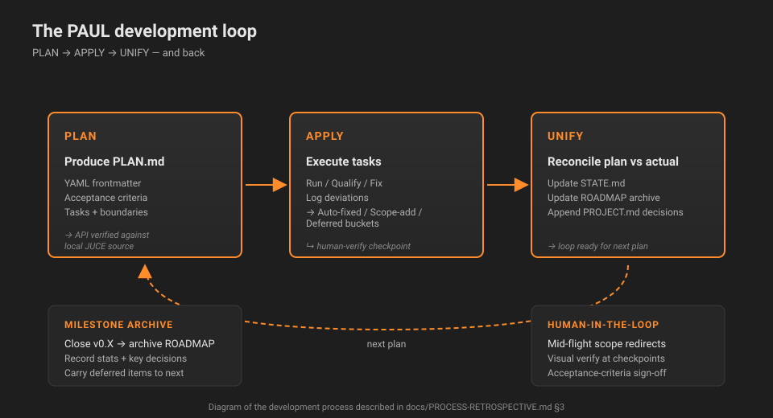

How Samplexpress is built.
Every feature in this project came out of a small loop, not a single big plan. The diagram below shows the cycle, and the paragraph under it summarises what each step actually does and where the human sits in it.
The development loop

The PLAN step writes a PLAN.md with YAML frontmatter, an explicit acceptance-criteria table, a checklist of tasks, and a boundaries section that names what must not change. APPLY runs those tasks in order, verifying each against the spec rather than memory, and logs every deviation under three buckets — auto-fixed, scope additions, deferred — so the audit trail survives across sessions. UNIFY reconciles plan versus actual: it folds accepted deviations into STATE.md, the project decision log, and the milestone archive, then closes the loop. The human sits in three places: mid-flight scope redirects (most of v0.2 was decided that way), visual verification at the end of a plan, and signing off acceptance criteria. The loop is honest about its limits — it does not pick APIs (every named JUCE method is re-checked against the local JUCE/modules source), and it does not replace the test methodology promised in CLAUDE.md (the achieved test surface on this Windows host is build-clean, launch-standalone, human-looks-at-it, and that gap is recorded in the full retrospective rather than hidden).